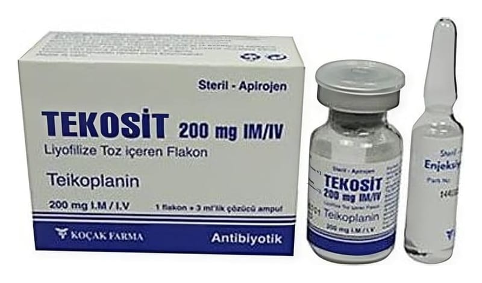

Tekosit 200 mg IM/IV Liyofilize Toz İçeren 1 Ampul

Ne için kullanılır
KT · Bölüm 1• TEKOSİT, kuru toz halinde teikoplanin isimli bir ilaç içerir. TEKOSİT, bakterilerin neden olduğu enfeksiyonların tedavisinde kullanılan bir antibiyotiktir. Bu enfeksiyonlar eklemlerinizde, kanınızda veya kemiklerinizde meydana gelebilir. TEKOSİT damar içine veya kas içine enjekte edilerek kullanılır. • Etkin maddenin kuru toz halinde yer aldığı 1 enjeksiyonluk flakon ve 3 mL enjeksiyonluk su içeren ampul aynı ambalaj içinde sunulmuştur. Her bir çözücü ampul içinde 3 mL enjeksiyonluk su bulunur. Her bir TEKOSİT I.M./I.V. Liyofilize Toz İçeren Flakonu içinde 24 mg sodyum klorür bulunur. 2 dozaj şekli mevcuttur. TEKOSİT 200 mg I.M./I.V. liyofilize toz içeren flakon ve TEKOSİT 400 mg I.M./I.V. liyofilize toz içeren flakon.
• TEKOSİT yetişkinlerde ve çocuklarda (yeni doğan bebekler dahil) vücudun aşağıdaki bölümlerinde meydana gelen bakteriyel enfeksiyonların tedavisinde kullanılır: - D eri ve deri altı doku - bazen ''yumuşak doku'' da denebilir. - Eklem ve kemikler - Akciğer - İdrar yolları - Kalp - e ndokardit olarak adlandırılan kalbin iç zarının veya kapakçıklarının iltihabı - Mide veya bağırsak: Hastalık peritonit olarak adlandırılır. Bu durum eğer böbrek problemleriniz varsa ve düzenli olarak diyalize giriyorsanız gerçekleşebilir. - Kan, yukarıda listelenen koşulların herhangi birinin sebep olması durumunda TEKOSİT Clostridium difficile adlı bir bakterinin bağırsakta neden olduğu bazı enfeksiyonların tedavisinde kullanılabilir. Bu durumda çözelti ağız yoluyla alınır.